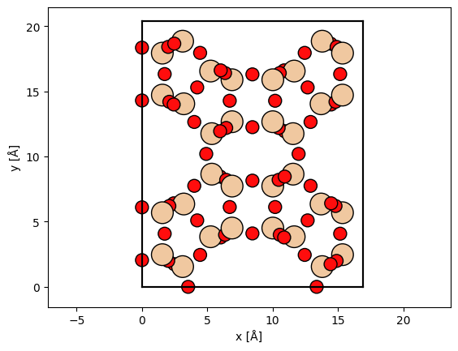
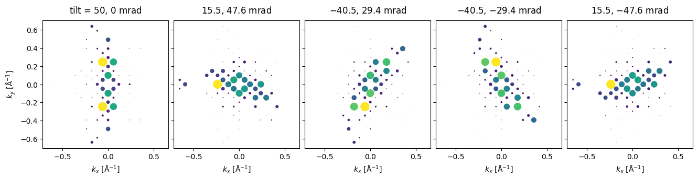

PED quickstart#
Configuration#
We start by (optionally) setting our configuration. See documentation for details.
abtem.config.set(
{
"device": "cpu",
"fft": "fftw",
"diagnostics.task_progress": True,
"diagnostics.progress_bar": "tqdm",
}
);
Atomic model#
atoms = read("data/SiO2_zeolite.cif")
cell = atoms.cell.copy()
atoms = atoms * (1, 1, 20)
abtem.show_atoms(atoms, plane="xy");

frozen_phonons = abtem.FrozenPhonons(atoms, 8, sigmas=0.078)
potential = abtem.Potential(
frozen_phonons,
sampling=0.05,
projection="infinite",
slice_thickness=1,
)
wave = abtem.PlaneWave(energy=100e3)
wave.grid.match(potential)
wave.tilt = precession_tilts(50, 5)
measurement = wave.multislice(potential).diffraction_patterns().mean(0).compute()
spots = (
measurement.crop(25)
.block_direct()
.index_diffraction_spots(cell=atoms)
.remove_low_intensity(1e-3)
)
visualization = spots.show(
explode=True,
scale=.05,
figsize=(14, 5),
annotations=False,
annotation_kwargs={"threshold": 1e-2},
)

Note that PED can also be calculate using the Blochwave method, see example.